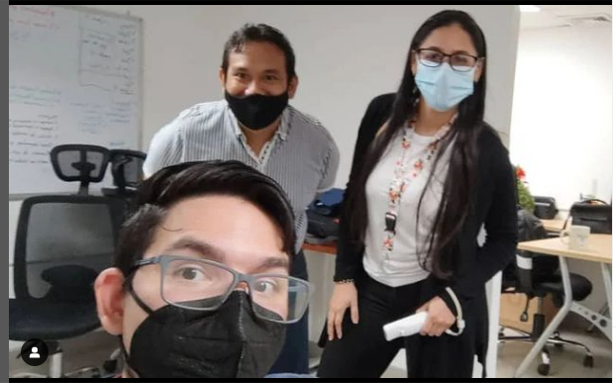
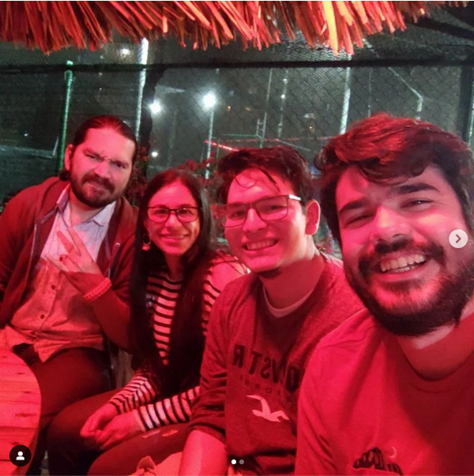
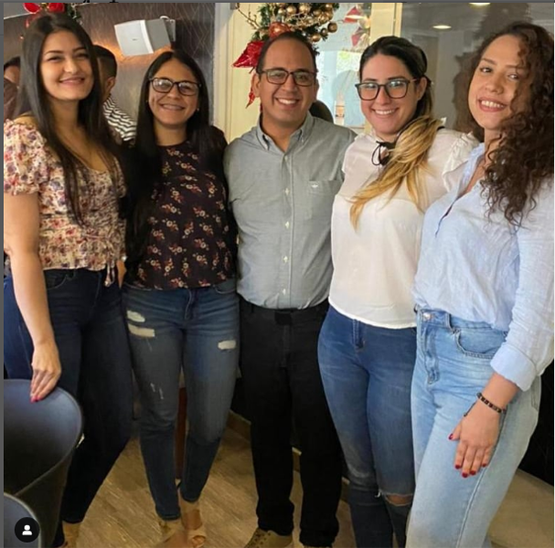

<!DOCTYPE html>
<html>
  <head>
    <title>Proyecto</title>
    <meta charset="utf-8">
    <meta http-equiv="X-UA-Compatible" content="IE=edge">
    <meta name="viewport" content="width=device-width, maximum-scale=1.0, user-scalable=no">
    <link rel="stylesheet" href="https://fonts.googleapis.com/css?family=Lato:400,400i,700,700i|Oswald:400,500,600,700&amp;display=swap">
    <link rel="stylesheet" href="../css/ejercicio-sass.css">
    <script src="https://kit.fontawesome.com/552ebddad2.js"></script>
  </head>
  <body></body>
</html>
<main>
  <section class="perfil">
    <h2 class="perfil__nombre" id="nombre">Diariela Hernández</h2>
    <h3 class="perfil__titulo">Ingeniero Industrial</h3><a class="perfil__boton" href="https://z-p15.www.instagram.com/diariela/?hl=es-la">Seguir</a>
    <div class="estadistica--perfil">
      <div class="estadistica_elemento">
        <h3>12k</h3><span>Seguidores</span>
      </div>
      <div class="estadistica_elemento">
        <h3>1.7k</h3><span>Siguiendo</span>
      </div>
      <div class="estadistica_elemento">
        <h3>48</h3><span>Articulos</span>
      </div>
    </div>
    <div class="perfil__minibio">
      <h2>Acerca de Mi</h2>
      <p id="perfilminibiop2">Ingeniero enfocado en el área de análisis y diseño de </p>
      <p id="perfilminibiop3">procesos para software administrativos.</p>
      <p id="perfilminibiop3">Especial interés en las áreas de diseño gráfico, </p>
      <p id="perfilminibiop3">edición de videos y desarrollo web.</p>
    </div>
    <div class="ubicacion--perfil"><i class="fas fa-map-marker-alt"></i>
      <h2>Venezuela</h2>
      <h3>Mcbo. Edo Zulia</h3>
    </div>
    <div class="galeria">
      <h2>Mis Fotos</h2>
      <div class="galeria__foto-principal"></div>
      <div class="galeria__fotos-adicionales"></div>
    </div>
  </section>
  <aside class="articulos">
    <div class="articulo"><span class="articulo__categoria">Experiencia laboral</span>
      <h2 class="articulo__titulo">Grupo Empresarial RG, marzo 2020 – febrero 2022.</h2>
      <h2 class="articulo__titulo">Cargo: Analista funcional de sistemas.</h2>
      <p class="articulo__descripcion">Estudiar y analizar procesos administrativos y de negocio en conjunto con el cliente para la definición de requerimientos funcionales necesarios en el diseño de nuevos proyectos de software y la mejora de los ya existentes. Documentación de los requerimientos y determinación de las funcionabilidades que debe poseer la solución. En la etapa de desarrollado, siguiendo la metodología SCRUM, monitorear los proyectos en ejecución velando que estos cumplan funcionalmente lo establecido, haciendo uso básico del manejador de base de datos SQL Management Studio. Apoyar en el cumplimiento de objetivos, tiempos de entrega y planificación de actividades. Capacitación y atención al cliente en casos asociados al funcionamiento de los diferentes software y aplicaciones móviles.</p>
    </div>
    <div class="articulo"><span class="articulo__categoria"></span>
      <h2 class="articulo__titulo">CPU, Centro de Procesamiento Urbano, junio 2019 – febrero 2020.</h2>
      <h2 class="articulo__titulo">Cargo: Jefe del Departamento de Inspección de Ingresos.</h2>
      <p class="articulo__descripcion">Calcular, revisar y avalar según la Ordenanza sobre Tasas Administrativas por Expedición de Licencias, Permisos, Venta, Copia y Certificaciones de Documentos del Municipio Maracaibo, el tributo realizado por el contribuyente en solicitudes ante la Oficina Municipal de Planificación Urbana (OMPU), la Oficina Municipal de Catastro (OMCAT) y la Oficina Municipal de Tierras Urbanas (OMTU).</p>
    </div>
  </aside>
</main>